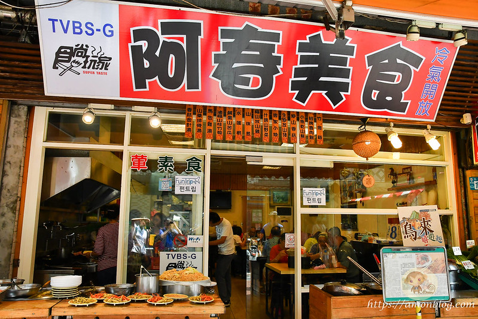

阿春美食
google評價：4.0★
店家資訊
地址：新北市烏來區烏來街109號
營業時間：早上11:00到晚上8:00，週四休息
店家電話：02-2661-7718
推薦菜單
白斬土雞250元/450元 生炒放山豬150元/250元
紅燒水庫魚290元 石板烤肉150元/250元
香酥溪魚100元/150元 鹹酥溪蝦100元/150元 魚蝦雙拼100元/150元
馬告竹筒飯90元 正宗竹筒飯70元 招牌滷肉飯30元/40元
馬告高麗菜100元 丁香山蘇150元/200元 麻油川七80元/120元
顧客評論
這家店走的是平價路線，有許多新鮮的山菜料理。一進門口就可以看到店家的炸溪蝦還有炸溪魚。推薦的菜有白斬土雞，也是店家招牌，是山上特展的白斬雞，原味跟加醬油都很扎實且帶有嚼勁。還有很酷的紅燒水庫魚，因為烏來在山上，所以就會去補水庫裡的魚來食用，但肉質還是很軟嫩鮮美，還有山產店獨有的生炒放山豬，店家用快炒爆香的方式，有醬汁的鹹香。